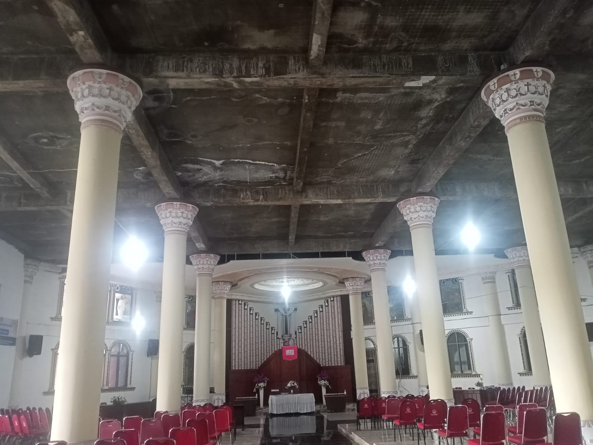
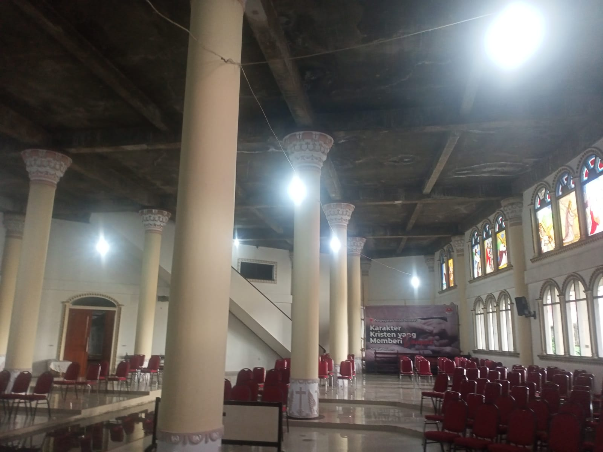
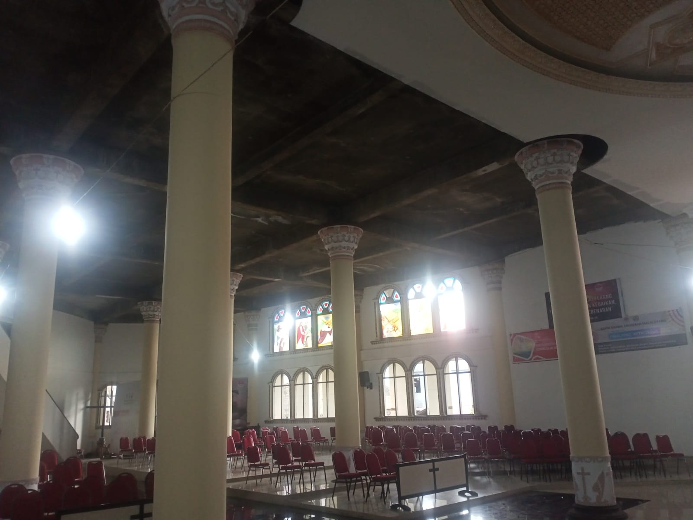
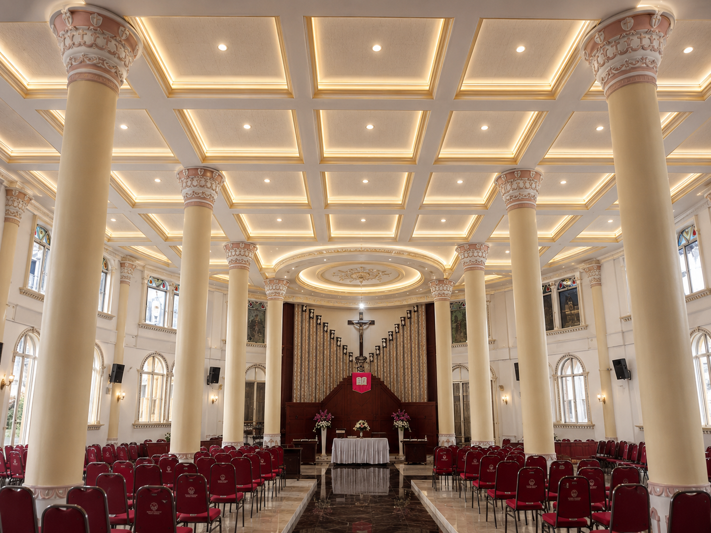
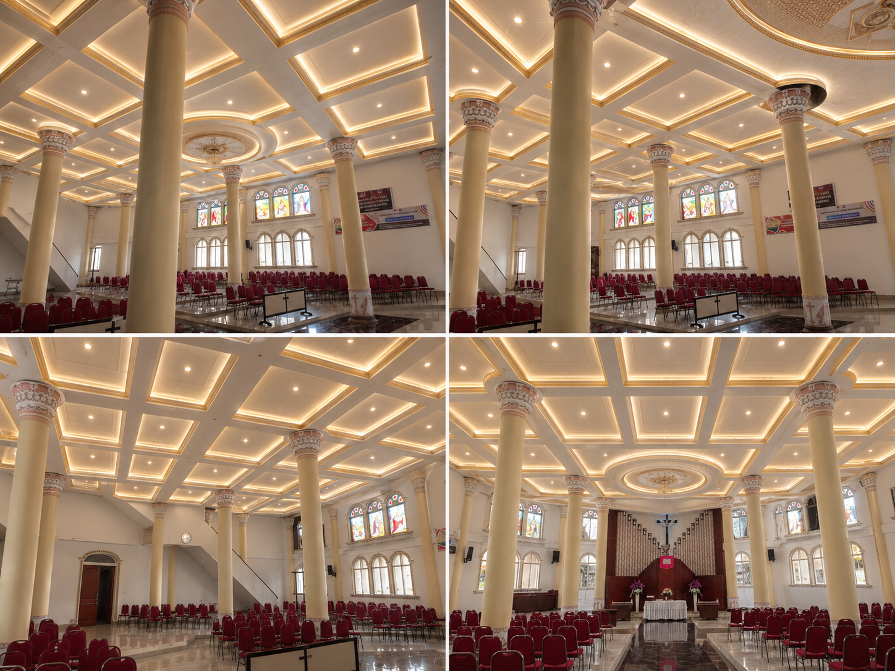
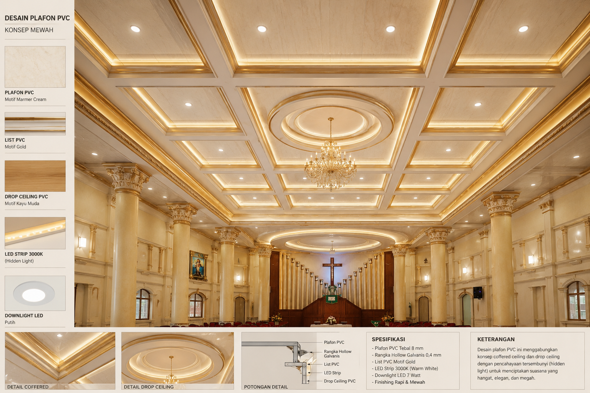

Donasi
Persembahan untuk Pelayanan, Diakonia dan Pembangunan.
Dukung Pembangunan Rumah Tuhan
Setiap dukungan menjadi bagian dari pelayanan untuk kemuliaan Tuhan.
Bank
BCA / BRI / Mandiri
No. Rekening
1234567890
Atas Nama
Panitia Pembangunan Gereja
QRIS Donasi
Scan QRIS untuk memberikan persembahan, bantuan diakonia, atau dukungan pembangunan gereja.
Progress Dana Pembangunan
Target Dana
Rp 2.000.000.000
Dana Terkumpul
Rp 900.000.000
45% dari target pembangunan telah tercapai.
Donatur Terbaru
| Nama | Jumlah | Tanggal |
|---|---|---|
| Keluarga A | Rp 5.000.000 | 12 Juni 2026 |
| Keluarga B | Rp 2.500.000 | 11 Juni 2026 |
| Hamba Tuhan | Rp 1.000.000 | 10 Juni 2026 |
Kondisi Gereja Saat Ini



Desain untuk pembangunan Plafon



Laporan Keuangan
Download laporan keuangan pembangunan gereja untuk melihat transparansi penggunaan dana.
Download Laporan PDFKonfirmasi Donasi via WhatsApp